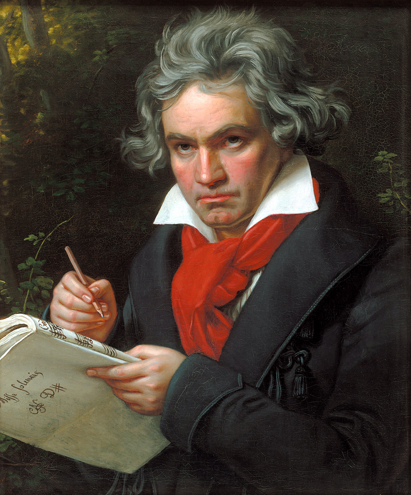
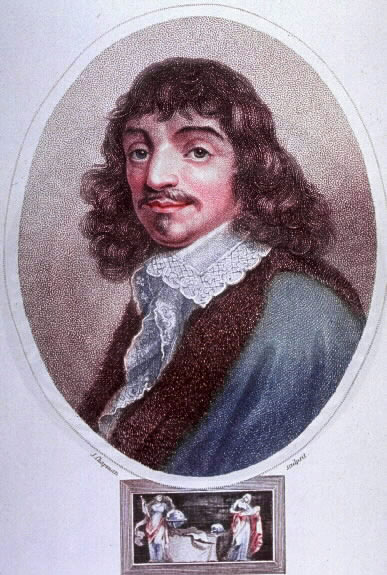

СОДЕРЖАНИЕ СТРАНИЦЫ
РЕНЕСАНС ПРОДОЛЖАЕТСЯ

1. Великие идеалы ренесанса — антропоцентризм; единое, достойное человека мировоззрение, которое должно стать путеводителем для решения всех потребностей — как повседневных, так и духовных.
В эпоху Ренесанса европейское человечество совершает в самом себе революционный переворот. Оно обращается против своего прежнего, средневекового способа вот-бытия, оно обесценивает этот способ и хочет свободно сформировать свой новый облик, частично базируемый на достижения античного человечества. Главная черта - «философская» форма вот-бытия, состоящая в том, чтобы из чистого разума, из философии свободно устанавливать правила для себя самого, для всей своей жизни. Предпологали перейти к более высокому уровню рассмотрения мира, свободному от связей с мифом и с традицией вообще, к универсальному познанию мира и человека, абсолютно лишенному предрассудков, в самом мире познающему, в конце концов, внутренне присущий ему разум и телеологию и его высший принцип — Бога. Предполагалось, что такая философия сделает свободным не только исследователя, но всякого философски образованного человека. В идеале, человек должен формировать себя по усмотрении свободного разума, и не только себя самого, в этическом смысле, но весь окружающий человека мир, политическое, социальное вот-бытие человечества нужно заново сформировать из свободного разума, из усмотрений универсальной философии. И во главе всего - философия должна иметь смысл как единой, всеохватывающей науки, науки о тотальности сущего; а науки во множественном числе, все те, которые еще предстоит когда-либо обосновать, и те, что уже находятся в работе, суть должны являться лишь несамостоятельными ветвями Единой Философии. Во времена Ренанесанса свое требование строгой обоснованности истины наука понимала не в смысле той объективности, которая методически господствует в наших позитивных науках, и который распространяется далеко за их пределы, создавая опору философскому и мировоззренческому позитивизму. Тогда человеческие вопросы принадлежали к царству науки, а также наука занималась их внутренней связью со всеми науками, даже с теми, в коих (как, например, в естественных) темой является не человек. Поэтому тогда наука могла притязать на свое значение для европейского человечества.
В идеале Ренесанса и Нового Времени личная жизнь человека проходит через несколько ступеней самоосмысления и самоотчета, от разрозненных, случайных актов такого вида—до ступени универсального самоосмысления и самоотчета, до осознания идеи автономии, идеи принятия волевого решения—решения придать всей своей личной жизни форму синтетического единства жизни в универсальной ответственности перед самим собой и, коррелятивно, придать самому себе форму истинного, свободного, автономного Я, которое старается осуществить врожденный ему разум, стремление оставаться верным самому себе, сохранять свое тождество с собой как разумным Я; но все это в неразрывной корреляции между отдельными личностями и общностями, в силу их непосредственной и опосредованной внутренней связанности — имеющей место и в согласии, и в спорах — во всех их интересах и в необходимости вести разум отдельной личности ко все более совершенному осуществлению только как личностный разум общности, и наоборот. Универсально и аподиктически обоснованная и обосновывающая наука с необходимостью возникает теперь как наивысшая функция человечества, а именно должна способствовать его развитию в направлении личной и, в рамках всего человечества, всеобъемлющей автономии — такова идея, составляющая движущую жизненную силу на высшей ступени человечества. Таким образом, философия в таком понимании есть не что иное, как рационализм, рационализм абсолютный, но этот рационализм различается в самом себе на различных ступенях движения интенции и ее наполнения, это ratio в постоянном движении прояснения самого себя, начиная с первого философского прорыва в истории человечества, врожденный разум которого до той поры еще целиком находился в скрытом состоянии, окруженный ночной темнотой.
Это приводит к последнему пониманию человеком самого себя как ответственного за свое собственное человеческое бытие, к пониманию им своего бытия как бытия, призванного к жизни в аподиктичности — не только абстрактно, в обычном смысле занимаясь аподиктической наукой,— но в аподиктической свободе приводя свое совокупное конкретное бытие к осуществлению аподиктического разума, понимая, что субъективность эта разумна в своем стремлении быть разумной, что это означает бесконечность жизни и стремления к разуму, что разум есть именно то, к чему человек как таковой стремится прийти в своем самом сокровенном стремлении, что только и может его удовлетворить, сделать его «счастливым», что разум не следует разделять на «теоретический», «практический», «эстетический» и какой бы то ни было еще, что человеческое бытие есть бытие телеологическое, есть долженствование бытия, и эта телеология властвует во всем и в каждом деянии или помысле Я, что благодаря самопониманию эта субъективность может во всем распознать аподиктический телос и что это присущее предельному самопониманию познание может быть только самопониманием согласно априорным принципам, самопониманием в форме философии.
Отсюда нам становится понятен тот порыв, который воодушевлял все научные предприятия, в том числе и на более низкой ступени фактических наук, порыв, который в XVIII столетии, что само себя называло философским, вдохновлял все более широкие круги современников на занятия философией и всеми частными науками как ее ответвлениями. Отсюда то пылкое стремление к образованию, то рвение в философском реформировании системы воспитания и всех форм социального и политического вот-бытия человечества, которое внушает такое почтение к этому часто поносимому веку Просвещения. Непреходящим свидетельством этого духа остается для нас величественный гимн «К радости», созданный Шиллером и Бетховеном. Ныне мы лишь со скорбным чувством можем внимать этому гимну. Нельзя и представить себе что-либо более контрастирующее с нашей сегодняшней ситуацией.
2. Раскол единого мировоззрения — удачное развитие исследования мира и великие практические достижения (научно — техническая революция), с одной стороны, и тупиковая ситуация в отношении духовных вопросов. Разрушение мечты о единой философии. Развитие дуализма. Причины такого состояния.
Что из этого получилось? В историческом аспекте позитивистское понятие науки в наше время является остаточным понятием. Из него выпали все те вопросы, которые прежде включались то в более узкое, то в более широкое понятие метафизики, и среди них все вопросы, которые недостаточно ясно именуются «высшими и последними». Они, как и вообще все исключенные вопросы, обнаруживают свое нерасторжимое единство в том, что явно или имплицитно, в своем смысле, содержат в себе проблемы разума — разума во всех его особых формах. В явном выражении разум является темой дисциплин о познании (а именно об истинном и подлинном, разумном познании), об истинной и подлинной оценке (подлинные ценности как ценности разума), об этическом поступке (истинно добрый поступок, действие из практического разума); при этом «разум» выступает как титульное обозначение «абсолютных», «вечных», «надвременных», «безусловно» значимых идей и идеалов. Все эти в широком смысле «метафизические», а в обычном словоупотреблении специфически философские вопросы выходят за пределы мира как универсума голых фактов. И все они претендуют на более высокое достоинство по сравнению с вопросами о фактах, которые и в порядке вопрошания располагаются уровнем ниже. Позитивизм, так сказать, обезглавливает философию.
Психологии приписывали ту же объективность, что и физике, и именно поэтому психология в ее полном и собственном смысле оставалась совершенно невозможной; ибо применительно к душе, к субъективности — как индивидуальной, у отдельного человека и в отдельной жизни, так и общественно-исторической, социальной в самом широком смысле — объективность, мыслимая по типу естественнонаучной объективности, оказывается просто-таки абсурдной. В этом заключается последний смысл того, что ставилось в упрек философии всех времен (за исключением философии идеализма, которая, правда, тоже не разработала правильного метода): что она не могла преодолеть натуралистический объективизм, в котором с самого начала — и до сих пор—заключается вполне естественное искушение.
 Вполне можно сказать, что только с Галилеем впервые вступает в свет идея природы как реально замкнутого в себе мира тел. Наряду с математизацией, слишком скоро приобретающей само собой разумеющийся характер, это имеет своим следствием замкнутую в себе природную каузальность, в которой заранее и однозначно детерминировано все происходящее. Тем самым, по-видимому, приуготовляется и дуализм, тотчас же выступающий у Декарта.
Вообще мы должны уяснить теперь, что восприятие новой идеи «природы», как инкапсулированного, реально и теоретически замкнутого в себе телесного мира, тотчас же приводит к полному превращению идеи мира вообще. Он расслаивается, так сказать, на два мира: природу и душевный мир, причем последний, в силу способа его соотнесенности с природой, разумеется, не становится самостоятельным миром. У древних встречались отдельные исследования и теории о телах, но они не делали замкнутый телесный мир темой универсального естествознания. Они проводили также исследования человеческой и животной души, но у них не было психологии в нововременном смысле. Следовательо — только вместе с Галилеем создалось впечетление о мире вещей, как полностью замкнутом в себе, и в принципе едином, самодостаточном, самостоятельном царстве, которое в большой мере можно разузнать и освоить математическими методами. И это стало началом большой беды — невозможности создать универсальную, единую философию. С другой же стороны — это начало и почва для бурного и плодотворного роста естественных наук, и вообще — для научно — технического прогресса. Таким образом, появился дуализм как основа непостижимости проблем разума, как предпосылка специализации наук и как основание натуралистической психологии.
Вполне можно сказать, что только с Галилеем впервые вступает в свет идея природы как реально замкнутого в себе мира тел. Наряду с математизацией, слишком скоро приобретающей само собой разумеющийся характер, это имеет своим следствием замкнутую в себе природную каузальность, в которой заранее и однозначно детерминировано все происходящее. Тем самым, по-видимому, приуготовляется и дуализм, тотчас же выступающий у Декарта.
Вообще мы должны уяснить теперь, что восприятие новой идеи «природы», как инкапсулированного, реально и теоретически замкнутого в себе телесного мира, тотчас же приводит к полному превращению идеи мира вообще. Он расслаивается, так сказать, на два мира: природу и душевный мир, причем последний, в силу способа его соотнесенности с природой, разумеется, не становится самостоятельным миром. У древних встречались отдельные исследования и теории о телах, но они не делали замкнутый телесный мир темой универсального естествознания. Они проводили также исследования человеческой и животной души, но у них не было психологии в нововременном смысле. Следовательо — только вместе с Галилеем создалось впечетление о мире вещей, как полностью замкнутом в себе, и в принципе едином, самодостаточном, самостоятельном царстве, которое в большой мере можно разузнать и освоить математическими методами. И это стало началом большой беды — невозможности создать универсальную, единую философию. С другой же стороны — это начало и почва для бурного и плодотворного роста естественных наук, и вообще — для научно — технического прогресса. Таким образом, появился дуализм как основа непостижимости проблем разума, как предпосылка специализации наук и как основание натуралистической психологии.
Конечно, если рациональная в естественнонаучном смысле природа есть по-себе-сущий мир тел (а это считается само собой разумеющимся в данной исторической ситуации), то мир-по-себе должен был особым образом расслаиваться в дотоле неведомом смысле: расслаиваться на природу-по-себе и некий отличный от нее бытийный род психически сущего. Отсюда должны были возникать значительные трудности, связанные уже с идеей Бога, заимствующей свою значимость в религии и никоим образом не отбрасываемой. Разве не был Бог неизбежен как принцип рациональности? Разве для того, чтобы вообще быть мыслимым, рациональное бытие, и уже в качестве природы, не предполагает рациональную теорию и формирующую ее субъективность; разве природа и вообще мир-по-себе не предполагает, таким образом, Бога как абсолютно сущий разум? Разве не отдается здесь предпочтение психическому бытию как в своем по-себе-бытии чисто для себя сущей субъективности? Божественная или человеческая, но это все-таки субъективность.
Естественно, уже в самом начале, как только Декартом были провозглашены идея рациональной философии и разделение природы и духа, уже у современника Декарта Гоббса в качестве предмета первой потребности выступила психология. Как мы уже отметили, она сразу же оказалась психологией в совершенно чуждом прежним временам стиле, будучи спроектирована как психофизическая антропология в рационалистическом духе. Итак, охарактеризуем в общих чертах физикалистский рационализм Нового времени. Вспомним еще раъ, что в своем античном истоке философия хотела быть «наукой», универсальным познанием универсума сущего — не смутным и относительным повседневным познанием: докса, а познанием рациональным: эпистема. Но истинной идеи рациональности и, во взаимосвязи с ней, истинной идеи универсальной науки старая философия еще не достигает—в этом были убеждены основоположники Нового времени. Новый идеал был возможен только по образцу заново сформированных математики и естествознания. Свою возможность он доказал вдохновляющим темпом своего осуществления. Но что иное в своей новой идее представляет собой универсальная наука (в идеале мыслимая завершенной), как не всеведение? Стало быть, для философов оно действительно является пусть и лежащей в бесконечности, но все же осуществимой целью — осуществимой, если и не для отдельных умов или исследовательских сообществ того или иного времени, то хотя бы в бесконечном прогрессе поколений, в их систематических исследованиях. Считается аподиктически ясным, что мир по себе есть рациональное систематическое единство, в котором все частности должны быть предельно рационально детерминированы. Их системная форма (их универсальная сущностная структура) должна быть найдена нами, она даже предуготовлена для нас и заранее нам известна, поскольку в любом случае является чисто математической. Надо только детерминировать ее в ее особенностях, что, к сожалению, можно сделать лишь индуктивным путем. Таков — разумеется, бесконечный — путь к всеведению. Мы живем, таким образом, в счастливой уверенности, что существует некий путь от ближнего к дальнему, от более или менее известного — к неизвестному, некий безошибочный метод расширения познания, с помощью которого все, что входит в универсум сущего, действительно должно быть познано в своем полном «по-себе-бытии» познано в бесконечном прогрессе. Но с последним всегда связан и другой прогресс: прогрессирующая аппроксимация чувственно-созерцаемых данностей жизненного мира в направлении к математически идеальному, прогрессирующее совершенствование всегда лишь приблизительной «подстановки» эмпирических данных под соответствующие им идеальные понятия, разрабатываемая для этого методика, выполнение все более тонких измерений, повышение эффективности соответствующих инструментов и т. д.
Вот он - путь мысли, который вдохновлял ученых, мечтавших достичь все потребностин своего духа чисто рационалистическими методами, базируемыми на познание реального мира. Это действительно высокие и достойные человека идеалы того периода, когда уже почти незаметно, но в высокой мере уже померкли самые первоначальные цели и идеалы о едином познании как духовново, так и естественного мира, и, вместе с тем — приближение к ее Создателю и Управителю. Это, между прочим, идеалы и весьма недалекого прошлого, такими в молодые годы были идеалами, которые толкали меня в нейронауку.
Итак, попробуем еще раз вывести самые главные тезисы. Поскольку это является делом исключительной важности, попробуем еще и еще раз понять, что же все — таки с нами, с нашим коллективным разумом случилось!? Я бы даже сказал — что случилось с нашей цивилизацией, нашей культурой, и, конечно же — с нашей наукой?
Исключительность, с которой во второй половине XIX века все мировоззрение современного человека стало определяться позитивными науками и дало себя ослепить достигнутым благодаря им процветанием, знаменовала равнодушное отстранение от тех вопросов, которые имеют решающую важность для подлинного человечества. Науки всего лишь о фактах формируют людей, заботящихся лишь о фактах. Еще и еще раз вспомним совершенно неоспоримую истину, что не всегда дело обстояло так, что свое требование строгой обоснованности истины наука понимала не в смысле именно той объективности, которая методически господствует в наших позитивных науках. Не всегда специфически человеческие вопросы изгонялись из царства науки, а их внутренняя связь со всеми науками, даже с теми, в коих (как, например, в естественных) темой является не человек, оставалась без внимания. И тогда наука имела значение для всего общества.
Почему не сбылись эти мечты? Если же новое человечество, воодушевленное и окрыленное этим высоким духом, оказалось несостоятельным, то это могло произойти лишь потому, что оно утратило питавшую этот порыв веру в свой идеал универсальной философии, в широту действия нового метода. Так и случилось в действительности. Оказалось, что этот метод мог привести к несомненным успехам только в позитивных науках. Иначе дело обстояло в метафизике, т. е. при рассмотрении собственно философских проблем, хотя и здесь не было недостатка в обнадеживающих и будто бы вполне удачных начинаниях. Универсальная философия, в которой эти проблемы — довольно неясным образом — были связаны с науками о фактах, принимала вид внушительных, но, к сожалению, не смыкающихся воедино, а сменяющих друг друга философских систем. Пусть в XVIII столетии еще можно было сохранять убеждение, что удастся прийти к единению, от поколения к поколению возводя теоретическое здание, потрясти которое не сможет никакая критика, как это бесспорно и ко всеобщему восхищению произошло в позитивных науках,— надолго это убеждение не могло удержаться. Вера в философский и методический идеал, направлявший движения с начала Нового времени, начала колебаться; и не только в силу внешнего мотива, не потому, что контраст между постоянными неудачами метафизики и неуклонным, все более мощным наплывом теоретических и практических успехов позитивных наук возрос необычайно. Все это производило впечатление на стороннего наблюдателя, а также воздействовало на ученых, которые по мере специализации позитивных наук все более удалялись от философии как специалисты (так и есть — специалисты пошли по более легкому пути, это обеспечивало не только карьеру, но и удовлетворяло их тягу к истине — так что никак нельзя упрекнуть никого из них; но все же — мало нашлось таких, кто просто не мог оставить выбранный сначала путь к поиску ответов на великие вопросы, к утверждению самых высоких идеалов поиска правды не только в частных фактах, но и в самых обобщенных вопросах; это ведь понималось, вспомним Эйнштейна, поиски в области кибернетики и т.д.). Но и среди исследователей, исполненных духа философии и потому сосредоточивших свой интерес на высших вопросах метафизики, установилось все более отчетливое ощущение несостоятельности, выраставшее у них из наиболее глубоких, хотя и совершенно непроясненных мотивов и заставлявшее их все громче протестовать против прочно укоренившихся, само собой разумеющихся моментов правящего идеала. Наступает долгий, начавшийся с Юма и Канта и продолжающийся до наших дней, период страстной борьбы за ясное уразумение истинных оснований этой вековой несостоятельности; борьбы, которая, конечно же, разыгрывалась в умах весьма немногих званных и избранных, в то время как прочая масса быстро находила и продолжает находить формулировки, коими можно успокоить себя и своих читателей (Конечно, в массовом уровне победила дешовка и примирение. Но вспомним, что это — примитивный уровень адаптации, это путь поиска легких решений, который, хоть и доставляет умеренное удавольствие и чувство комфорта, никогда не приводит к великому состоянию, когда человек со всей своей душой и всем своим умом (т.е., с полным, неделенным когито) награждается аподиктичным пониманием, что он делант свое истиное дело).
Неизбежным следствием был своеобразный поворот всего мышления. Философия сделалась проблемой для самой себя, и прежде всего, разумеется, в виде вопроса о возможности метафизики, что, в соответствии со сказанным выше, имплицитно затрагивало смысл и возможность всей проблематики разума. Скепсис в отношении возможности метафизики, крушение веры в универсальную философию, способную дать руководство новому человеку, говорит именно о крушении веры в «разум», понятый в том смысле, в каком в древности «эпистеме» противопоставлялось «докса». Только разум в конечном счете придает всему, что считают сущим, всем вещам, ценностям, целям их смысл, а именно их нормативную соотнесенность с тем, что со времени начала философии обозначается словом «истина» — истина по себе — и коррелятивным ему словом «сущее» Вместе с тем пропадает также и вера в «абсолютный» разум, из которого мир получает свой смысл, вера в смысл истории, смысл человечества, в его свободу, понимаемую как способность человека придавать разумный смысл своему индивидуальному и всеобщему человеческому вот-бытию.
 Если человек утрачивает эту веру, то это означает, что он утрачивает веру «в самого себя», в свое собственное истинное бытие, которым он не обладает всегда, уже в силу очевидности «я есмь», но обладает и может обладать лишь в борьбе за свою истину, за то, чтобы самому сделаться истинным. Истинное бытие всюду составляет идеальную цель, задачу, возложенную на «эпистеме», на «разум», в противоположность всего лишь мнимому бытию, представляющемуся в «докса» бесспорным и «само собой разумеющимся». В сущности, каждому знакомо это различие, связанное с его истинной и подлинной человечностью, поскольку и понимание истины как цели, как задачи, не чуждо нам уже в повседневности, пусть даже здесь лишь в разрозненном и относительном виде. Но философия оставляет позади этот предварительный образ (как в первом оригинальном акте изначального учреждения это сделала античная философия), обретая всеохватывающую идею универсального познания, направленного на всю совокупность сущего, и полагая ее себе как свою задачу ... История философии, рассматриваемая изнутри, все более приобретает характер борьбы за вот-бытие — борьбы, которую философия, с наивной верой в разум отдавая все силы выполнению своей задачи, ведет с отрицающим или эмпирически обесценивающим ее скепсисом. Последний все время придает значимость фактически переживаемому миру, миру действительного опыта, как миру, в котором нельзя найти ни разума, ни его идей. Сам же разум и его «сущее» — разум как придающий из себя смысл сущему миру и, если посмотреть с противоположной стороны, мир как сущий из разума — становятся все более загадочными, до тех пор пока осознанно выступившая мировая проблема глубочайшей сущностной связи между разумом и сущим вообще, эта загадка всех загадок, не становится, наконец, собственной темой философии. Нам, современным людям, сформировавшимся в ходе этого развития, грозит величайшая опасность утонуть во всемирном потопе скепсиса и упустить тем самым свою собственную истину.
Если человек утрачивает эту веру, то это означает, что он утрачивает веру «в самого себя», в свое собственное истинное бытие, которым он не обладает всегда, уже в силу очевидности «я есмь», но обладает и может обладать лишь в борьбе за свою истину, за то, чтобы самому сделаться истинным. Истинное бытие всюду составляет идеальную цель, задачу, возложенную на «эпистеме», на «разум», в противоположность всего лишь мнимому бытию, представляющемуся в «докса» бесспорным и «само собой разумеющимся». В сущности, каждому знакомо это различие, связанное с его истинной и подлинной человечностью, поскольку и понимание истины как цели, как задачи, не чуждо нам уже в повседневности, пусть даже здесь лишь в разрозненном и относительном виде. Но философия оставляет позади этот предварительный образ (как в первом оригинальном акте изначального учреждения это сделала античная философия), обретая всеохватывающую идею универсального познания, направленного на всю совокупность сущего, и полагая ее себе как свою задачу ... История философии, рассматриваемая изнутри, все более приобретает характер борьбы за вот-бытие — борьбы, которую философия, с наивной верой в разум отдавая все силы выполнению своей задачи, ведет с отрицающим или эмпирически обесценивающим ее скепсисом. Последний все время придает значимость фактически переживаемому миру, миру действительного опыта, как миру, в котором нельзя найти ни разума, ни его идей. Сам же разум и его «сущее» — разум как придающий из себя смысл сущему миру и, если посмотреть с противоположной стороны, мир как сущий из разума — становятся все более загадочными, до тех пор пока осознанно выступившая мировая проблема глубочайшей сущностной связи между разумом и сущим вообще, эта загадка всех загадок, не становится, наконец, собственной темой философии. Нам, современным людям, сформировавшимся в ходе этого развития, грозит величайшая опасность утонуть во всемирном потопе скепсиса и упустить тем самым свою собственную истину.
3. Ну и в окончании — что же нам делать, если мы все это поняли? Неужели так и останемся у разбитого корыта? Нет, конечно — надо просто продолжать следовать по пути, начертанного мыслителями Ренесанса и Нового времени! Ренесанс продолжается! Довести его до победного конца - это личное дело каждого из нас, это наше общее дело.
Ну вот и перенесемся в настоящее. Почему единая философия и наука утратила эту ведущую роль? Что мы имеем, какой урок прошлого? Видим, что были большие идеалы, были большие успехи, и были большие крушения этих идеалов. Но будем справедливы! Разве вообще когда — нибудь бывало иначе? Разве иначе вообще может быть? Так нет же! Никогда на свете не было, нет и не будет так, чтобы все, на что нацелились, свершилось. Надо же быть терпеливым и настойчивам. И при том — ведь есть реальные огромные успехи, ум человека в очень многом себя оправдал, человек осуществил многие свои мечты. Ну ладно — конечно, основная цель осталась такой же далекой, как и в начале. Но — разве цель из - за этого менее ценная?
Спросим себя прямо и весьма сурово. Хотели бы мы в наши дни, после опыта длиною в пару столетий, упрекнуть путь, пройденный нашими собратьями, и сказать — мы бы поступили по другому, мы бы поступили умней!? Я лично бы не набрался смелости и нахальности так сказать! Ну подумаем спокойно и без лишних эмоций. Хотели бы мы возвратиться к таким идеалам и к таким практическим свершениям, конечно, учитывая коррекцию времени — этих нескольких столетий?
Будем честными. Ответим и сами себе и другим на простой вопрос: А имеется у нас что — то по лучше? Есть у кого — то план по лучше? Так не прячьте под кроватью. Покажите, докажите! Создали за эти столетия люди и исория какую - то лучшую мечту и лучший путеводитель? Есть нечто такое в любом государстве, в любое время! Похоже, что ничего лучшего нет! И потому — правильно ли мы делаем, что совсем осунулись и опустили руки только потому, что в этом пути нам в течение всего несколько столетий не совсем все удалось именно так хорошо, как было задумано. Но ведь — мы имеем огромные достижения позитивных наук, этот большой и абсолютно убедительный опыт показывает, что ум на самом деле способный свершать огромные дела — ничто другое не в силах нечто подобное свершить в нашем мире! Так только по этому одному — наш ум ведь практичуски доказал, на что он способен. И если он смог это все сделать в этом, в естествонаучном деле, так разве нам следует его упрекать, что он это не сделал везде, не был в состоянии достигнуть все поставленные цели. Мы несправедливы! Мы из этого вынесли вывод, что ум в таком случае вообще не на что другое не годен. Но это ведь преждевременное и несправедливое суждение. Кто сказал, кто поставил конкретный срок во времени — ум, к 2015 году ты должен все закончить — и в практическом, и в духовном плане! Тогда мы это отпразнуем, и все — можешь уходить! Ты свое сделал. Нам тебя больше не понадобиться. Не становится немного как то стыдно?
Мы же могли подойти по другому, и сказать так — о, спасибо тебе, ум, за то, что ты так великолепно сделал, хоть и попутно наломал не мало дров. Но ведь иначе не бывает — нигде и никогда! Конечно, мы бы были непротив, если бы у тебя кое что по больше удалось и в духовной сфере. Но, из — за этих ошибок и недоделок можем ли каждый из нас сказать следующее: 1) что лучше бы всего этого не было, лучше бы мы и сейчас бы жили, если и не как в каменном веке, то уж безусловно в Средние века; и 2) не самы ли мы виноваты, а не только слабые способности нашего ума свершить что — то великое в сфере духовной? Мы сами (и в первую очередь ученые) отстранились от этих вопросов, стали на стороне более сильного, как только почувствовали, что на этом втором — материальном и практичном пути нас ожидает более легкий и быстрый успех, что следуя по этому пути мы легче можем обеспечить себе более легкую и удобную жизнь? И так это скапливалось - как снежная лавина — чем дальше, тем больше, с все более нарастающей силой. Похоже, что у нас не имеется достаточно аргументов, чтобы повесить нос и отказаться от этого великого почина вообще. Поэтому не следует нам так поступать. Хотя бы потому, что, как мы отчетливо видим, как только это поле оставляют серъезные и честные исследователи, тотчас же оно населяется огромным количеством мало образованных, не очень стеснительных, и в то же время наделенных огромными амбициями и актерскими способностями особами, и эта область превращается просто в модный и широковостребованный балаган.
Поэтому — не повесим носы, вздохнем всей грудью, вспомним свой священный долг, и — за дело! Успеха Вам!
А.А.А., 2015 (по трудам Э. Гуссерля)